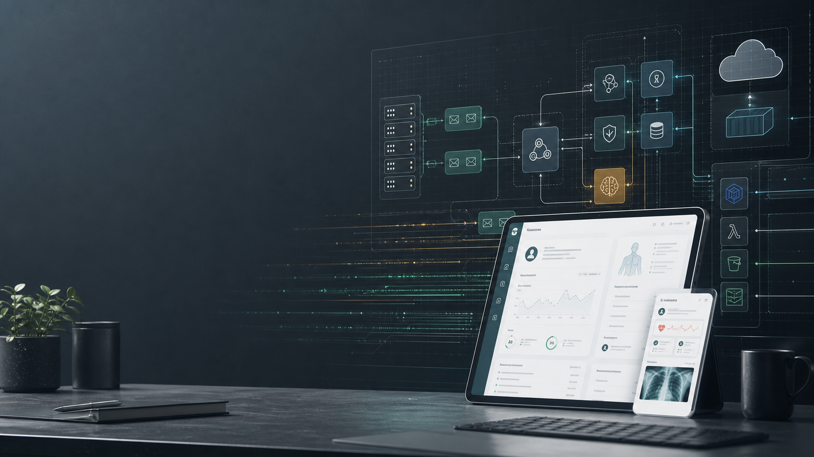

Architecture that survives production
Designed distributed and serverless systems with AWS Lambda, SNS, SQS, SQLAlchemy, Boto3, PostgreSQL, Docker, and controlled migration processes.

Senior Software Architect | Principal Software Engineer
I have been developing software since 2007, with a career spanning production architecture, event-driven systems, healthcare integrations, cloud infrastructure, performance recovery, mentoring, and disciplined engineering delivery.
Profile
I am a backend-focused software architect currently working as Senior Software Architect at ProductBox / CanMobilities. My work centers on translating ambiguous product goals into production systems, stabilizing complex applications, and helping teams ship with better technical judgment.
Across healthcare, SaaS, e-commerce, finance-adjacent workflows, integrations, and mobile products, I have worked on Node.js, TypeScript, Python, SQL/PostgreSQL, AWS, Google Cloud, Docker, Kubernetes, Linux, and queue-based architectures using SQS, RabbitMQ, and BullMQ.
Selected Impact
Designed distributed and serverless systems with AWS Lambda, SNS, SQS, SQLAlchemy, Boto3, PostgreSQL, Docker, and controlled migration processes.
Resolved downtime and data bottlenecks through PostgreSQL indexing, PDF offloading, image payload reduction, SQL analysis, and focused service extraction.
Built healthcare integrations, ADT workflows, OAuth, EMAR frontend work, compliance support for NCA and PDPL, and secure migration paths away from legacy approaches.
Introduced test frameworks, Codecov visibility, Docker and Ansible onboarding, GitOps practices, pull-request review habits, and mentoring for junior and senior engineers.
Experience
Leading backend, frontend, DevOps, and DevSecOps work for the Al-Mather healthcare application, including AI-enabled healthcare features, Socket.IO chat migration, NCA and PDPL compliance work, GitOps practices, and delivery leadership across web, mobile, and QA.
Spearheaded Merge.dev integration work, rebuilt Docker setup, introduced backend unit testing, created a document service that reduced load on the core application by about 75%, built an AWS Lambda image service, and improved PostgreSQL performance practices.
Architected a self-service healthcare integration backend for CareAxiom, including schema-blueprint API mapping that reduced custom engineering effort for routine integration onboarding.
Supported Pulse V2 launch by migrating hundreds of gigabytes of legacy data, delivered invoice reconciliation with AWS Lambda, SNS, and SQS, and resolved release-blocking invoicing issues across a multinational SaaS operation.
Built backend and frontend features for task management, scheduling, checklist templates, completed checklists, timezone-aware workflows, Stytch authentication, two-factor authentication, Dockerization, and Ansible onboarding.
Owned and rebuilt Tasks backend and frontend areas, implemented OAuth and password-hash migration, worked on ADT integrations and serverless applications, bootstrapped React frontend work, built React Native Android functionality, improved test coverage, and mentored developers.
Developed Node.js REST backends, Socket.IO and Redis chat, Titanium and PhoneGap mobile apps, Unity3D mobile games, embedded C for Nucleus OS, C/C++ network traffic analysis, protocol signatures, and malware-research software experiments.
Capabilities
Node.js, TypeScript, NestJS, Express, REST APIs, Python, Flask, SQLAlchemy, Boto3
AWS, Lambda, SQS, SNS, S3, Google Cloud Run, Docker, Kubernetes, Linux, Git, GitOps
PostgreSQL, MySQL, advanced SQL, indexing, migrations, debugging, performance tuning
React, Next.js, React Native, AngularJS, Titanium, PhoneGap, Unity3D mobile experience
Claude Code, ChatGPT, Gemini, Greptile, prompt engineering, LLM-assisted delivery
Agile delivery, Jira, Confluence, PR review, mentoring, test coverage, Codecov, onboarding automation
Education
College of EME, NUST | 2008 | CGPA 3.16/4.0
Federal Board | 2004 | 80%
Federal Board | 2002 | 88%
Beyond Work
Outside work, I enjoy maintaining a personal server homelab, exploring how LLMs can improve everyday learning and productivity, reading and watching news, taking outdoor walks, drinking tea, and spending time with family.